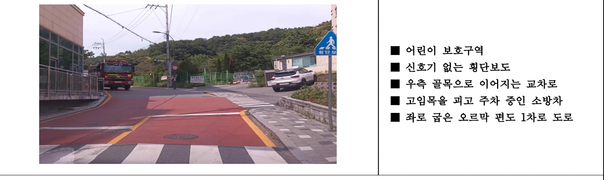

763. Which of the following are the safest ways to drive in the given situation? (Select TWO)

- ①Pass through the intersection quickly in anticipation of vehicles emerging from the alley on your right.
- ②Slow down to observe the situation ahead, as the fire truck parked on the opposite side of the road is obstructing your view.
- ③In a school zone, stop and proceed only if there are pedestrians in the crosswalk.
- ④If you plan to turn right, watch out for vehicles or pedestrians coming out of the alley on your right.
- ⑤You should drive within the maximum speed limit, as the speed limit in all school zones is set at 30km/h.
Show answer
Answer
② Slow down to observe the situation ahead, as the fire truck parked on the opposite side of the road is obstructing your view.
④ If you plan to turn right, watch out for vehicles or pedestrians coming out of the alley on your right.
Reference
At crosswalks without signals in child protection zones, you must stop temporarily regardless of whether there are pedestrians (Article 27, Paragraph 7 of the Road Traffic Act). It is necessary to drive in preparation for vehicles moving past the fire truck parked in front. It is dangerous to drive at high speeds on roads with poor visibility, and when turning right, you must carefully look out for pedestrians and other vehicles before driving.
Reference text is a machine translation for study.